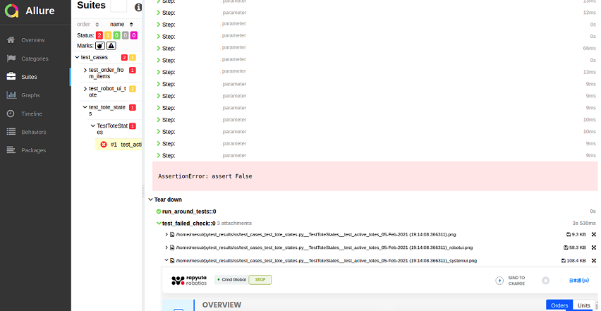

Run PyTest in VS Code

1. ConfTest.py
The first thing to do to work with fixtures is to add a conftest.py file. When the pytest test is triggerred, firstly, methodin the conftest is executed if we mark if as autouse=True.
2. Test Body
When test class extends TestBase, Test Fixture in the baseClass is triggered since autorun is selected as true. In this way; before and after test methods are executed. One more thing is groups: pytest.mark. In this way you can run a specific group. (- m parameter) After registering marks on pytest.ini, you can select them in the execution:
3. Hooks in Conftest.py
Hooks are called after each stage in the test: before(setup), test, after(teardown). At this moment status of the test case can be parsed.
4. Function Fixture
After test function execution finishes, fixtures, marked as function scopes are called. If the test is failed, we can capyure the screenshot over selenium driver and save the file with the name of the test case which called the fixture.
5. Allure Reporting and Decorators
Allure cmdline tool should be installed. (allure –version should work)
Test steps are added in the code. For this, allure-pytest should be installed. (NOT pytest-allure-adaptor)
Test steps are added in the code. For this, allure-pytest should be installed. (NOT pytest-allure-adaptor)
6. Adding screenshot to the Allure Report
Screenshots can be saved as a png file already, but if you want to see them directly on Allure report, they can be attached to the report itself.

7. Starting allure server
Execute pytest with --alluredir parameter: All files are collected under the directory that we showed.
After that, server is started to show the graps:
8. A final tip
Adding allure steps is possible before each method. If you want to add inside, add another method and call it.